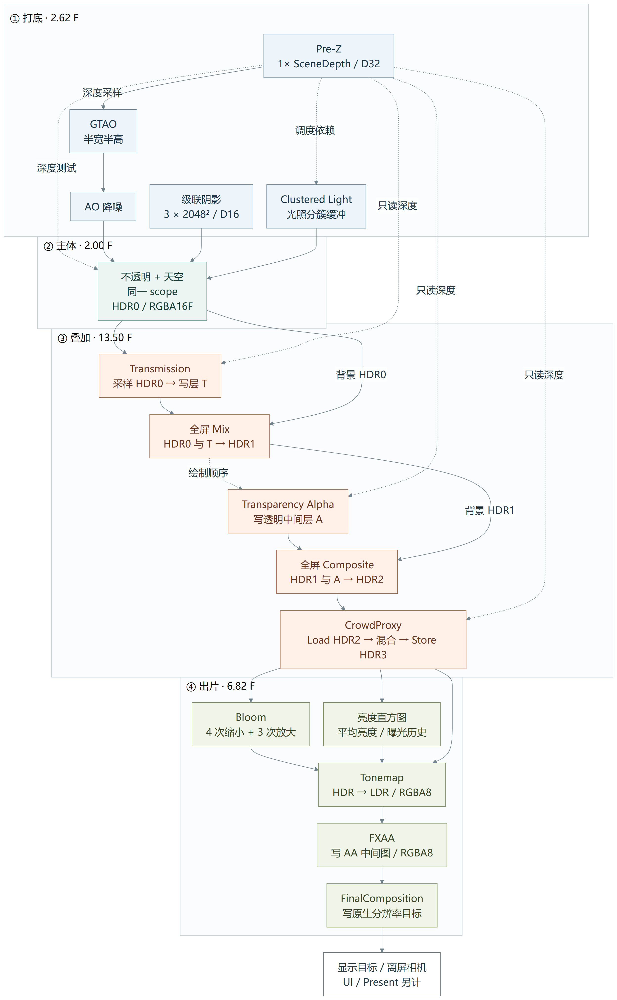
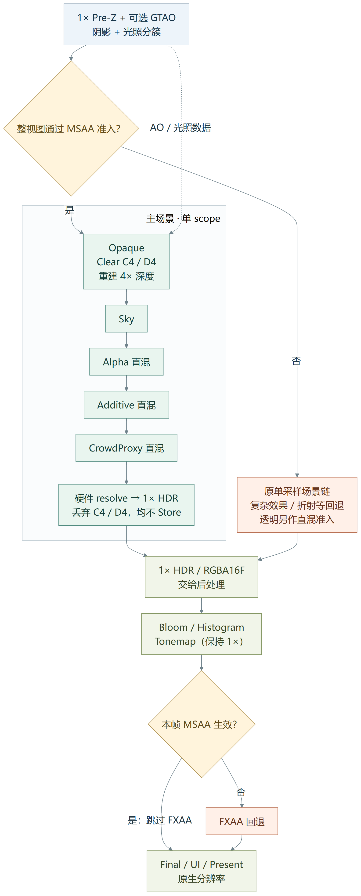

本文不讨论“哪种渲染架构永远更快”。我们只解决一个具体问题：在已有画面和功能约束下，怎样减少中间目标的反复读写，同时把工程成本、画质风险和验证成本控制住。
一、先讲清楚三件事
1. 手机 GPU 是怎么画一帧的
许多移动 GPU 采用分块渲染。它们把画面切成 tile，在片上存储中处理这一块的颜色、深度和混合，适当的时候再把结果写回外存。tile 的大小和具体调度方式由 GPU 与驱动决定，不能把某个固定尺寸当作所有设备的规则。
这个设计给我们的优化机会是：同一块像素还要接着画，就尽量别先把它写出去，过一会儿再读回来。
不过，留在 tile 内不等于完全免费。覆盖测试、着色、混合仍有成本，片上空间也有限；附件过多、格式过宽或 MSAA 样本过多，仍可能增加工作量。
还要区分两个经常被混用的概念：
- UMA 描述 CPU/GPU 共享系统内存的组织方式。
- TBR/TBDR 描述 GPU 的分块渲染方式。两者并不等价，不能因为一台设备是集成 GPU，就把它的测试结果直接外推为移动 TBDR 的收益。
2. 什么叫“搬一张图”
先约定一个不会算重、也不会漏算的口径：
一次完整图像的读或写，分别计一次。写出去再读回来，是两次传输，不是一张。
| 搬法 | 什么时候发生 | 通俗说法 |
|---|---|---|
| Store | 一个物理渲染 scope 结束后，结果还需要保留 | 把画好的附件存下来 |
| Load | 要在附件已有内容上继续绘制 | 把背景接回来继续画 |
| Sampled Read | shader 从另一张图取值 | 画这一张时，翻另一张图 |
这里的 scope 指一次实际的渲染 Begin/End 范围。一个 scope 可以包含多个引擎逻辑 Pass；多个函数调用、多个 draw call，不一定产生多次附件写回。
反过来，两个 Pass 名字挨着、甚至写在同一个 C++ 函数里，也不代表它们真的共用了一次 Load/Store。
附件的 Load/Clear/Discard 与 Store/Discard
应由真实用途决定：不需要旧内容时避免 Load，后面不需要结果时避免
Store；需要保留内容时则不能乱丢。Khronos 的附件读写性能示例也采用这一分析方法，并明确说明图像压缩会降低实际传输量。
3. 本文的计价单位：「张」
全文固定以原生分辨率下的一张 HDR 图作为参考单位，记作
F：
1 | F = 1080 × 2340 × 8 / 1024² |
即 1 张 = 1F ≈ 19.28 MiB，格式为 RGBA16F。后文缩分辨率时，参考单位 F 不变。
| 内容 | 每像素字节 | 一次完整传输折合 |
|---|---|---|
| HDR 主画面 RGBA16F | 8 | 1.000F |
| 深度 Depth32F | 4 | 0.500F |
| LDR / 最终画面 RGBA8 或 BGRA8 | 4 | 0.500F |
| 半宽半高的 AO 图 RG16F | 4 | 0.125F |
| 3 级 × 2048² 的 D16 级联阴影 | 2 | 约 1.245F，即 24 MiB |
“半分辨率”在本文指宽、高各减半，像素数是原来的 1/4。 “1/4 像素统计”和“宽高各缩到 1/4”不是一回事，后者只有 1/16 像素。
记账时还要分清三本账：
- 结构账：实际编译出的物理 scope、附件 Load/Store、资源尺寸和格式。
- 采样账：shader 请求数量、采样覆盖范围、滤波方式与缓存复用。
- 真机账：GPU external read/write counters、GPU 帧时、功耗与热稳定表现。
本文主要使用第一本账，加上便于比较的采样足迹估算。缓存、压缩和未变化 tile 消除可能让实际流量变小，多 tap、overdraw、缓存失效又可能让它变大。因此，下表既不是整帧所有访存的总账，也不是物理 DRAM 流量的严格下界。
二、实际引擎内一般管线图及完整账单
这不是所有引擎的通用模板，而是一条具有代表性的移动端前向链路。先把它分成四段：
| 段 | 干什么的 | 包含的步骤 |
|---|---|---|
| ① 打底 | 准备深度、阴影、AO 与光照列表 | Pre-Z、CSM、GTAO/降噪、Clustered Light |
| ② 画主体 | 绘制不透明物体和天空 | Opaque + Sky，满足合同条件时共用 scope |
| ③ 往画面上贴东西 | 叠加折射、透明与人群代理 | Transmission/Mix、Alpha/Composite、CrowdProxy |
| ④ 调色出片 | 从 HDR 得到最终显示图 | Bloom、曝光、Tonemap、FXAA、FinalComposition |
1. 满配基线：有折射、一个 Alpha 层、有人群代理
本例固定 renderScale=1，场景与输出均为 1080×2340；AO、Bloom、曝光、FXAA 开启；一组三级 CSM 每帧更新。普通透明材质不实际采样 SceneColor。没有额外 Additive 层、自定义后处理、编辑器拾取或调试绘制。
下表计入目标附件的声明读写，以及所列图像的名义采样足迹。没有计入材质纹理、顶点/索引、光照缓冲、主着色中的 AO/阴影采样、多 tap 放大、UI 等其他流量。Bloom 的级联尺寸按理想 1/2 缩放近似，实际工程需按取整后的 extent 重算。
| 段 | 步骤 | Store（F） | Load（F） | 采样足迹（F） | 合计（F） | 约 MiB |
|---|---|---|---|---|---|---|
| ① | Pre-Z | 0.500 | — | — | 0.500 | 9.64 |
| ① | CSM 3×2048² | 1.245 | — | — | 1.245 | 24.00 |
| ① | GTAO，半宽半高 | 0.125 | — | 0.500 | 0.625 | 12.05 |
| ① | AO 降噪 | 0.125 | — | 0.125 | 0.250 | 4.82 |
| ② | Opaque + Sky | 1.500† | 0.500 | — | 2.000 | 38.56 |
| ③ | Transmission | 1.500† | 0.500 | 1.000 | 3.000 | 57.84 |
| ③ | 全屏 Mix | 1.000 | — | 2.000 | 3.000 | 57.84 |
| ③ | Transparency Alpha | 1.500† | 0.500 | — | 2.000 | 38.56 |
| ③ | 全屏 CompositePremultiplied | 1.000 | — | 2.000 | 3.000 | 57.84 |
| ③ | CrowdProxy | 1.000 | 1.500 | — | 2.500 | 48.20 |
| ④ | Bloom，4 降 3 升 | 0.660 | — | 1.410 | 2.070 | 39.92 |
| ④ | BuildHistogram | — | — | 1.000 | 1.000 | 19.28 |
| ④ | Tonemap | 0.500 | — | 1.250 | 1.750 | 33.74 |
| ④ | FXAA | 0.500 | — | 0.500 | 1.000 | 19.28 |
| ④ | FinalComposition | 0.500 | — | 0.500 | 1.000 | 19.28 |
† 这里的 1.5F 是 1F 颜色 + 0.5F 深度。即使该 Pass 不修改深度，只要后面还消费它，当前 FrameGraph 仍可能声明 Store。驱动是否省掉了未修改深度的实际写出，要看真机 counter。本表从“声明账”出发，统一把这些 Store 算上。
这也修正了早期账单里的一个遗漏：Transmission 和 Alpha 层的只读深度 Store 没有被计入。原来的“约 24 张 / 460.9 MiB”不能直接与这里的修订口径混算。
2. 按段汇总
| 段 | 约 F | 约 MiB | 占本结构账 |
|---|---|---|---|
| ① 打底 | 2.62 | 50.51 | 10.5% |
| ② 画主体 | 2.00 | 38.56 | 8.0% |
| ③ 叠加层 | 13.50 | 260.29 | 54.1% |
| ④ 调色出片 | 6.82 | 131.50 | 27.3% |
| 合计 | 24.94 | 480.87 | 100% |
各行独立取整，总计先用未取整值相加。这些数字的作用是定位重复搬运，而不是据此断言某台手机已经用满内存总线。
3. 管线图：哪些输出被保存，哪些结果被再次采样

读图时注意：
- 实线表示结果流向，虚线表示只读深度或绘制/调度依赖。一条箭头不等于固定一次 DRAM 读取。
- 四个大框只是逻辑分段，不代表框内全部属于同一个物理 scope。基线只假定 Opaque/Sky 已满足合并条件。
- Clustered Light 的缓冲开销未纳入纹理主表；当前深度依赖还包含调度用途，不能把它等同于 shader 真正扫描了深度。
- 折射和透明还复用光照、阴影等资源，图中省略这些重复连线。没有对应内容时，相应分支不会执行。
- Additive、自定义 HDR 效果和 AA 后效果会增加节点或阻断合并，必须按实际帧单独计账。
三、这张账单里最刺眼的五件事
1. “主体只占 8%”不能读成“着色只花 8%”
不透明与天空的目标读写在这张表里确实只占约 8%，但它们的材质采样、顶点读取和大部分光照采样没有计入。阴影、Pre-Z、透明也都在处理几何，不是只有第二段在“画东西”。
正确的结论是：中间目标链已经暴露出一笔值得优先检查的结构成本。 至于材质着色是否更贵，要用另一份采样账和 GPU 时间回答。
2. 透明覆盖很小，不代表全屏合成很便宜
旧路径为普通透明单独开一张全屏 HDR 图，再读入主画面和透明层，做一次全屏合成。
即使透明只覆盖一小块，后面的 Composite 仍然遍历完整输出。中间图的实际 Store 可能受压缩或 tile 优化影响，但全屏合成的固定工作不会随着透明几何简单地缩成同样的小比例。
因此，先问“这张中间图能不能不存在”，通常比先问“透明 shader 能不能少算几个乘法”更有价值。
3. 输出只有一个数，也可能扫了一整屏
直方图最后服务于一个平均亮度值，但当前实现读取完整 HDR。减少统计样本是合理候选，不过它改变的是统计方法，稀疏高亮和周期性图案仍可能影响曝光结果。
Bloom 也不能按最终图有多小来判断成本。第一次缩小仍覆盖完整 HDR，后面还有多级读写。多个 tap 不必然产生等比例 DRAM 流量，减少 mip 级数也不等于消掉第一次输入读取。
4. 动态分辨率不会自动替你处理固定分辨率阴影
场景宽高缩小后，像素相关项大致随面积下降；CSM 的 3×2048² 仍然是 24 MiB 一次完整 Store。
同样不会简单按 renderScale² 下降的，还包括原生分辨率输出、部分固定大小缓冲，以及几何/提交成本。不能把整帧账单统一乘一个 0.49，就宣称 0.7 档已经算完。
5. FrameGraph 能省钱，但前提是声明真实
后面确实没有消费者时，深度可以在最后一个使用它的 scope 后 Discard。相反，只读、临时变量、导入资源这些名字，都不足以证明结果可以丢弃。
声明过宽会阻止合并；声明过窄会制造缺少同步、错误内容或 GPU validation 错误。优化的第一步是让图认识真实用途，不是删掉看起来碍事的依赖。
四、优化账单
这里的“账单”不是一张承诺收益表，而是一套改法。每一项都要回答：删掉什么、新增什么、怎样保持语义、失败时走哪条路。
1 | 净收益 = 删除的 Load / Store / 采样开销 |
以下伪代码用于解释合同，不是可以直接复制进任意引擎的现成 API。
1. 先看全局：收益、条件和实施状态
| # | 优化思路 | 本文口径下的名义预算 | 主要条件 / 风险 | 当前状态 |
|---|---|---|---|---|
| 1 | 普通透明直接混合到 HDR | 单个 Alpha 层省 2F，约 38.56 MiB | 必须排除 SceneColor 采样，保持混合与 alpha 合同 | 已落地 |
| 2 | Alpha、Additive、人群共用 scope | 单个 Alpha + Crowd 案例再省 3F，约 57.84 MiB | 相同附件、实际相邻、没有采样反馈；不能乱改顺序 | 已落地 |
| 3 | FXAA 直接写最终目标 | 等尺寸时省 AA 中间图写读，共 1F | AA 后消费者、缩放、格式与色彩空间 | 可选方案，未实施 |
| 4 | 直方图只取 1/4 像素数 | 名义 texel 读取减少 0.75F，约 14.46 MiB | 改坐标与归一化，做曝光回归；不是 DRAM 保证 | 可选方案，未实施 |
| 5 | 折射快照 + 直接混合 | 半宽半高快照、独立 scope 示例省 1.5F，约 28.92 MiB | 快照成本、重叠折射、细节变糊 | 可选方案，未实施 |
| 6 | CSM 从 2048² 降为 1024² | 三层 D16 的完整 Store 差额为 18 MiB | 阴影细节、稳定性、级联和 bias 调参 | 可选方案，未实施 |
| 7 | 4× MSAA 替换独立 FXAA | 可删除 FXAA 的 1F，但还要扣 MSAA 新成本 | 多采样附件不跨 scope 持久化；与 #3 不重复计账 | 原型已验证，默认仍 FXAA |
“已落地”表示代码和相应工程验证完成，不表示这些 MiB 已被手机 counter 证实。
2. 普通透明：先取消中间图，再讨论合并
旧流程是：
1 | 画透明层 A → Store A |
对不采样当前画面的普通透明，保持原绘制顺序，直接在 B 上进行硬件混合即可。一次 source-over 的 RGB 公式是：
1 | B_next = a × C + (1 − a) × B |
旧流程先在黑底累积预乘层，再一次合成到 B；在实数运算下，它与上述递推等价。减少中间存储仍会改变浮点舍入位置，所以目标是保持视觉/数学语义，不是承诺逐 bit 相同。
第一个坑：shader 输出是否已经预乘 alpha。
当前普通透明输出的是直通 RGB，正确因子仍是
SrcAlpha / OneMinusSrcAlpha。不能只把 srcColor 改成
One；那会把透明物体变亮。Crowd 等已经输出预乘 RGB 的 shader
才使用另一套匹配的因子。
第二个坑：改了输出附件，却忘了旧的 SceneColor 采样声明。 新旧逻辑资源版本可能仍指向同一个物理图像，不能一边把它当颜色附件写，一边当普通纹理采样。
1 | Usage colorUse = queryExactProgramUsage(allTransparent, SceneColor); |
第一版适合整段回退：只要 Alpha/Additive 中有一个特殊材质需要旧背景，就保留整段旧路径。不要为了分出“快材质”而擅自调整透明排序；旧流程中它们可能采样的是同一份冻结背景。
其他必须保留的细节：
- 保留原来的透明排序与分桶规则，不顺手改变 Modulate 的既有含义。
- Additive 的 RGB 可用 One/One，但 alpha 应保护目标值，不能照搬“独立 Additive 图的 alpha 清零”。
- 原 Composite 把整张输出 alpha 设为 1。没有天空、背景未覆盖或下游读取 alpha 时，要证明新路径合同一致，不能只看 RGB。
- 不启用透明 depthWrite，也不丢弃 UserData / 拾取 MRT。
按本文完整声明账，原 Alpha 层加合成是 5F，单独直混为 3F：省 2F。这个阶段还没有把人群的独立读写算进去。
3. 透明与人群：省的是物理边界，不是函数调用
直混完成后，Alpha、Additive、Crowd 都可能在同一张 HDR 和同一张深度上连续绘制。这时才有机会把它们收进一个物理 scope。
1 | canMerge = bothPassesAllowMerge |
这里有三个容易被低估的工程约束：
- 源码相邻不等于调度相邻。 上传、计算或自定义效果可能插在中间；要检查最终 execution plan。
- 只读深度采样在单 Pass 合法，不等于合并器支持它。 当前原型只合并能证明不采样该深度附件的材质，不放宽通用反馈检查。
- UserData、多 MRT、sampleCount、layer/view mask 都属于附件合同。 合并不是把两个 mergeable 都设成 true 就结束了。
当前 Crowd 已经允许合并，真正要清理的是透明读取声明与附件合同。也不需要为了这一步先建设完整的 multi-subpass 或 local-read shader 系统：相同固定功能附件的逻辑阶段可以共用一个 Begin/End。是否进一步获得理想的片上驻留，仍需验证。Khronos subpass 示例
单个 Alpha + Crowd 的增量账是：
| 阶段 | Alpha 部分 | Crowd | 合计 |
|---|---|---|---|
| 原路径 | 层 + 合成，5F | 2.5F | 7.5F |
| 只做直混 | 3F | 2.5F | 5.5F |
| 两者同 scope | 共用颜色 Load/Store 与一次深度 Load | — | 2.5F |
所以 #1 与 #2 合计省 5F≈96.41 MiB。如果采用“不为只读深度记 Store”的另一份近似账，#2 就是 2.5F、两项合计 4.5F；不要两种口径交叉相加。
没有折射或中间 HDR 消费者时，还可继续把 Opaque/Sky 与这组直混阶段连接起来。这是进一步的边界收益，不应在同一条边界上再次记账。
4. 抗锯齿中转：能写最终目标，就不必再抄一遍
独立 FXAA 先写一张 RGBA8 AA 图，FinalComposition 再读它并写最终目标。等尺寸时，让 FXAA 直接写最终目标，可以取消 AA 的 0.5F Store + 0.5F Read。
1 | if (finalImage && fxaaEnabled && noConsumerAfterAA |
避坑重点：
- 最终 target 可能是离屏相机，不一定是 swapchain。
- pipeline 按目标格式构建，输入 texel size 按输入纹理计算；别为了原生输出尺寸改坏全局 CameraBlock。
- 保留色彩编码、输出 alpha、调试输出、UI overlay 与最终 Store 合同。
- 目标导入 FrameGraph，只说明所有权，不能代替“输出必须保留”的声明。
动态分辨率是分界线。 “低分辨率 FXAA 后再双线性放大”不等于“在显示像素位置运行 FXAA”。在本例 0.7 档，后者 invocation 数约为前者的 2.06 倍，可能用更多采样和算术换掉中间图。
因此先做等尺寸快路径；非等尺寸融合单独评估，不能写成“顺带缩放，画面与性能都不变”。
5. 直方图：减少样本，不要只减少线程
当前 shader 用 GlobalInvocationID 直接取原图 texel。只把 dispatch 宽高减半，会只统计左上区域；如果平均亮度仍除以原像素数，还会再叠加归一化错误。
低成本做法是不创建新的缩小 RT，而是在原 HDR 的每个 2×2 区域取一个代表样本：
1 | sampleExtent = ceilDiv(sourceExtent, 2); |
1 | // 16×16 threads，256 个 bin；示意省略亮度映射函数。 |
保持黑色 bin、曝光历史初始化、inversePreExposure 和适应速度的原有规则。检查奇数尺寸、非 16 整除尺寸、全黑、稀疏高亮、棋盘格和室内外切换。
样本数确实减少约 75%，但它并不证明 DRAM 读取也减少 75%：跳着取 texel 仍可能触及相同纹理块或缓存行。曝光结果也不严格相同，应记录 EV 差与时间曲线。
不要直接拿 Bloom 代替测光输入：当前 Bloom 第一层已有 Karis 权重和亮度阈值，不是未经修改的场景亮度副本。
6. 折射：副本必须付钱，直接混合也会改变重叠语义
普通透明可以不读背景，折射通常不能。合理的结构是：先生成独立、冻结的背景快照，再让折射几何采样快照、直接写主画面。
1 | if (!visibleTransmission.empty()) { |
快照放在 HDRAfterOpaque 之后、第一笔折射之前。同一批折射采样同一份快照，保留原来的非递归背景语义。不额外使用 Bloom 阈值，不无故生成 mip 链，保持原 UV、边界处理和预曝光约定。
净收益要扣掉生成副本。 以半宽半高快照、仍独立开折射 scope、背景采样按完整足迹估算为例：
| 项目 | 原路径 | 新路径 |
|---|---|---|
| 生成副本：读原 HDR + 写小图 | 0 | 1.25F |
| 折射颜色附件 | 中间层 Store，1F | 主 HDR Load + Store，2F |
| 深度 Load + 后续保留的 Store | 1F | 1F |
| 折射背景采样足迹 | 1F | 0.25F |
| 全屏 Mix | 3F | 0 |
| 合计 | 6F | 4.5F |
这个算例省 1.5F≈28.92 MiB，不是只看到删了一个 3F Mix，就记成省 3F，也不足以支持固定省 2.4F。实际净值要按折射覆盖率、滤波与缓存重算。
另一个不能漏掉的画面变化是：原 Transmission 不开启混合，多层重叠时中间图留下最后一个片元，然后只 Mix 一次；改成逐片元 source-over 后，前面的半透明折射片元也会累计进来。
所以，第一版可只开放给能保证 opacity=1 的材质，其他保留旧路径；否则美术需要同时确认细节模糊与重叠关系变化。不能通过打开 depthWrite 来偷偷改变遮挡语义。
7. 阴影：固定预算用独立质量档位管理
三级 D16 CSM 的精确差额为：
1 | 3 × (2048² − 1024²) × 2 / 1024² = 18 MiB |
这既是该组纹理的名义容量差，也是一次完整 Store 的等价差额；不是对内存峰值或采样次数的直接承诺。
建议把 1024/2048 做成设备质量档位，而不是只修改 C++ 默认值：已有场景序列化的尺寸可能覆盖默认值。调整尺寸时一起检查 cascade split、lambda、maxDistance、fadeStart 和 bias。
纹理尺寸变小，不只是边缘变软。接触阴影可能消失，移动时可能闪烁，级联接缝可能更显眼。PCF 按 textureSize 计算偏移，只能避免硬编码采样步长，不能替你保证画质。
阴影更新频率、级联数和 caster 预算是另外的手段；它们涉及缓存失效、光源/相机移动与动态物体，不能把“本帧不更新”直接当成始终正确的省钱方法。
8. MSAA：它是管线方案，不是 FXAA 的另一个开关
4× MSAA 对前向分块渲染有吸引力：它改善几何覆盖边缘，不必像 FXAA 一样对整张最终图做边缘滤波。但条件是，多采样颜色和深度尽量留在同一物理 scope 内，结束时直接 resolve，并丢弃不再使用的多采样附件。Khronos MSAA 性能示例
本例最大的障碍是 Pre-Z → GTAO → Opaque。如果直接把预渲染深度升级为 4×，即使给 GTAO resolve 出一张 1× 深度，后续 Opaque 仍需要原 4× 深度做测试，未必能避免它跨 scope 保存。
仅深度往返的名义账就变为：
1 | 原 1× D32：Store 0.5F + Load 0.5F = 1F |
删除独立 FXAA 只省 1F。还没讨论颜色，多采样深度的这笔新增开销就可能把收益吃掉。
本次原型选择的路线
保留原来的 1× Pre-Z / GTAO。在主 scope 里另建 transient 4× 颜色与深度，Opaque 重建自己的深度；Sky、Alpha、Additive、Crowd 接着画，最后只导出 1× HDR。

图中的 1×/4× 指样本数，不是分辨率倍数；C4/D4 是多采样颜色/深度。AO 仍按自己的半宽半高尺寸生成。
1 | if (!wholeViewMsaaAdmission(device, materials, outputs, effects)) { |
这里并没有“免费重用”原深度：Opaque 不再依赖原 1× 深度做 Equal 测试，可能增加隐藏片元着色。我们选择这条路线，是为了保留 AO 进入 PBR 光照的位置，同时避免强迫 4× 深度跨 scope Store/Load。
把 AO 简单后移，再乘最终 HDR 并不等价；天空、emissive、specular 等也可能受到影响。那是另一项算法和美术决策。
接通 MSAA 必须检查的实现层
- sampleCount 进入纹理创建、import、尺寸统计、alias key 和资源池完整 identity。
- sampleCount 进入 pipeline cache key、multisample state、legacy 附件和 secondary inheritance。
- resolve 目标必须是匹配格式的独立单采样图；普通颜色输出位置和 resolve 位置即使编号相同，也不能指错资源。
- 多采样附件不再需要时明确 Discard；最终导出的 HDR / 显示目标必须保留。
- secondary 失败后应取消、排空并重录整个 scope，不能拿半份记录继续提交。
- 按实际格式、usage 和设备限制查询支持；不支持就回退，不用 GENERAL 布局或虚假的“支持标记”掩盖问题。
原型对 UserData、特殊屏幕采样、折射、活动自定义效果和调试/描边保守整视图回退。默认仍为 FXAA，MSAA 显式开启；没有开启 sample shading 或 alpha-to-coverage。
普通 MSAA 主要改善几何边缘，不自动解决三角形内部的高光/纹理锯齿，也不会恢复动态分辨率丢失的细节。Masked 头发与植被需要另外评估。Khronos 多采样教程的限制说明
不要把同一张 AA 图省两次
| 对照路线 | 可以删除的整图开销 |
|---|---|
| 独立 FXAA + Final → 融合 FXAA/Final | AA 中间图的写读，1F |
| 独立 FXAA + Final → MSAA + Final | 独立 FXAA 的 LDR 读写，1F，再扣 MSAA 新成本 |
| 已融合 FXAA/Final → MSAA + 普通 Final | 没有额外一份 AA 中间图可删；比较的是 shader 工作与 MSAA 成本 |
9. 怎么把这些想法变成可交付的预算
在第二节的同一套假设下，保持单采样路线、不把 MSAA 额外加入，纸面算例是：
| 阶段 | 本阶段再减 | 结构账余额，约 MiB/帧 |
|---|---|---|
| 基线 | — | 480.87 |
| #1 + #2：直混与合并 | 5F | 384.46 |
| 再做 #3 + #4 | 1.75F | 350.72 |
| 再做 #5 + #6 | 1.5F + 18 MiB | 303.80 |
这不是发布承诺：#3 要满足等尺寸与消费者条件，#4 要接受并验证曝光近似，#5 使用本文指定的快照成本假设，#6 需要阴影档位确认。实际命中率、DRAM 压缩和材质采样未包含在余额中。
本次已经取得的证据是：
- 透明直混 / scope 合并和 MSAA 原型已实现；Windows、Lua 与 Android ARM64 核心库编译通过。
- 19 项定向回归通过。实体 GPU 回读验证 Dynamic、secondary、legacy 单 subpass 与异常重录结果一致，没有 validation error。
- 完整受控场景的 Opaque、Sky、Alpha、Additive、Crowd 合成一个 scope；AO 开关、0.7 档、resize 及复杂效果回退均有覆盖。
- 编译 IR 中多采样附件的名义 Load/Store 为 0；这不是“手机 DRAM 流量已经为 0”。桌面测试设备也不能代替移动 TBDR 设备。
目前没有 Android 实机带宽、热稳定帧时和生产内容美术验收。因此原型仍是 opt-in，不能写成“MSAA 已在手机上全面胜过 FXAA”。
五、总结
1. 先避这八个坑
| 容易踩的坑 | 正确处理 |
|---|---|
| 把一次读写往返算成一张；把 MiB 当成帧时 | 单独列读和写，字节、GPU 时间、内存峰值分开看 |
| 看 Pass 名字就判断是否合并 | 看编译后的 scope、attachmentUniverse 和真实 Begin/End |
| 认为只读深度一定不需要 Store | 查后续消费者；声明账与驱动实际写回分开统计 |
| 给同一图换个版本号就称为快照 | 用物理资源 identity 判断采样读写是否别名 |
| 删中间层时顺手改排序、预乘方式或 alpha | 先证明合同等价，再做图像差分和特殊材质回退 |
| 只改 dispatch，不改坐标和统计分母 | 覆盖全屏、统一样本数量，保留 barrier 与曝光历史 |
| 把 MSAA 当作后处理开关或免费画质升级 | 先画清楚多采样附件的整个生命周期，再算新增成本 |
| 用桌面通过、19 个测试或 nominal=0 代替手机收益 | 分别验收合法性、画面正确性、移动性能和热稳定性 |
另外，别把 rasterScopes 与表格行数直接比较：三级
CSM、七步 Bloom 可以被合并成一行账，而 Histogram 又不是 raster
scope。逻辑 Pass、物理 scope 和真正的 Vulkan subpass 是不同计数。
2. 怎么省工程预算
先做两个路线都能复用的工作。 真实用途查询、透明直混、scope 合并、采样数 identity 与回退统计，既服务 FXAA 路线，也为 MSAA 原型铺路。不要为了少一次普通透明合成，先上完整 local-read、复杂 multi-subpass 或新的资源系统。
先选可控快路径。 等尺寸最终输出、无屏幕采样透明、无 UserData 的运行时视图，都是边界清楚、容易验证的起点。Unknown 先回退，比为了“全覆盖”增加一套脆弱协议更容易维护。
把三种预算分开批准。
- 结构预算：能否删掉中间图、取消物理边界、缩短生命周期。
- 画质预算：能否接受曝光采样减少、阴影降档、折射细节变化。
- 工程预算：要增加多少 pipeline 变体、缓存状态、烘焙与回归成本。
本次 material codegen 签名发生变化，部署已有资产前要走既有离线材质重烘焙流程。测试现场烘焙成功，不代表所有产品资产已经重新打包。
3. 怎么省带宽预算
先定本项被分配到的预算，不要把整条 SoC 内存总线的理论峰值全部分给渲染目标。
1 | 每帧可用预算 MiB = 分配给该项的 GiB/s × 1024 / 目标 FPS |
例如，假设项目给这一项分配 4 GiB/s，在 60 FPS 下就是约 68.27 MiB/帧。这只是预算示例，不是对某台手机可用带宽的断言。
在本文参考尺寸下，每帧少搬 1F，60 FPS 的名义吞吐差约为 1.21 GB/s。它解释了为什么一张看似普通的中间图值得优化，但不能直接换算成多少毫秒或多少功耗。
优先顺序通常是：
- 先删不必要的中间图与全屏合成。
- 再消掉相同附件之间可避免的 Store/Load 边界。
- 然后对统计与固定尺寸资源建立质量档位。
- 最后评估 MSAA 等结构性方案，把新增成本一起算进去。
动态分辨率也要按项目分别算：本例 0.7 档实际为 752×1629，面积约为原来的 0.485。场景相关目标大致乘这个比例，CSM 和原生最终输出不跟着乘。
4. 用最小验收闭环控制返工
固定场景、相机、动画、曝光历史与 renderScale，先只改一个开关，再做四步：
- 导出前后 execution plan：确认到底少了哪张图、哪一次 Load/Store，且没有新副本把收益吃回去。
- 做像素回读 / 图像差分：包含多层透明、Additive、无天空背景、稀疏亮点、折射重叠、动态分辨率与 resize。
- 在目标设备记录 external read/write、GPU p50/p95、tile/fragment 工作与热稳定后帧时；冷启动编译时间单独统计。
- 记录快路径命中率、回退原因与实际内容权重，再决定默认档位。
预算不是只看最好的一帧：
1 | 加权平均收益 = Σ（场景出现比例 × 该场景的前后流量差） |
没有透明、没有人群或没有对应效果的帧，这一项的收益就是零。大量内容触发回退时，要先查内容与合同，不能继续沿用“满配场景省 5F”的数字代表整个游戏。
最后记住一句话：TBDR 优化不是把 Pass 数字做小，而是让同一块像素在正确的生命周期里少出入外存；省下的预算，也必须通过同一口径的账单、真实画面和目标设备来确认。